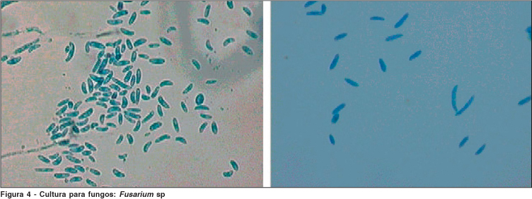
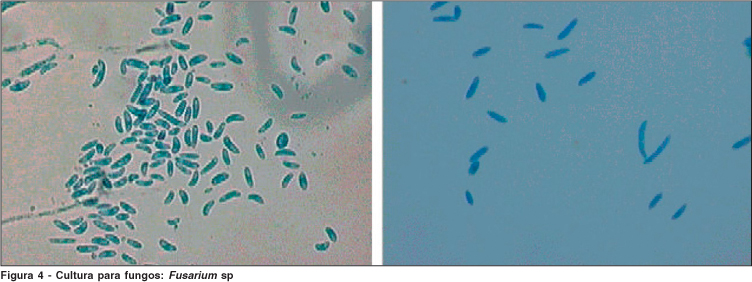

+ Tên một loại nấm gây loét giác mạc và viêm mủ nội nhãn


Hình: Nấm Fusarium trong môi trường nuôi cấy dưới kính sinh hiển vi
Fusarium
* Định nghĩa:
+ Tên một loại nấm gây loét giác mạc và viêm mủ nội nhãn

Hình: Nấm Fusarium trong môi trường nuôi cấy dưới kính sinh hiển vi